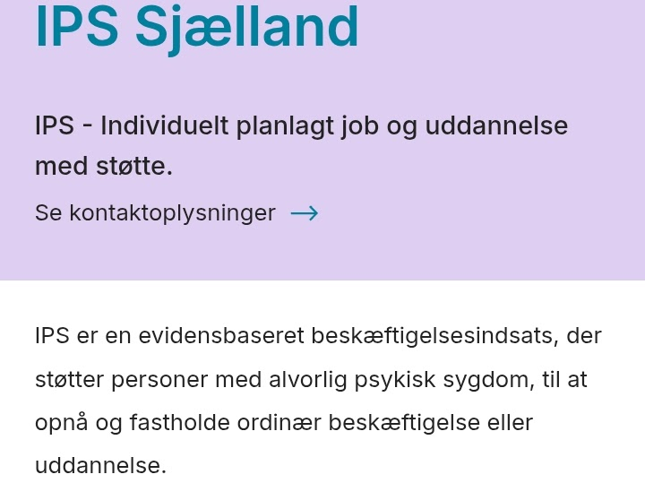

Retspsykiatrisk 2025

1. Indledning
Overflytning til Retspsykiatrisk Afdeling


Billede. .

Billede. .

Billede. .


Billede. .
Tosse T
Mens jeg lå i sengen og skrev kl. 22.30, bankede T højlydt på døren og gik ind på min stue. Hun ville bare lige tjekke. Jeg var træt af de konstante små ydmygelser og umyndiggørelsen af især typer som hende. Det var meget stressede hele tiden at blive forstyrret især når man lå i sengen, det var en forulempelse hver gang og det var helt unødvendigt. T skulle have været forbi kl. 21.00, som de plejede. Ikke 22.30. Det sagde jeg til hende, hun prøvede at tale udenom men kunne ikke, da vi blev fast forstyrret kl. 2100, 0000 og 600. Det skabte en slags forudsigelighed og stressede ikke. Men det gjorde det når hun nu kom. Jeg var ved at brække mig over den evige umyndiggørelse.
Der var kun trusler og ekstra straffe, ingen positiv motivation for noget som helst. Jeg var allerede straffet langt hårdere end jeg i værste fald skulle, og jeg var tvunget til at ændre for og efternavn, til at slette mine konti på de sociale medier, jeg måtte ikke kontakte offentlige myndigheder og ikke komme i København. Så var der den konstante nedværdigende behandling og at jeg var dybt ruineret og ingen fremtidsudsigter havde. Den eneste årsag til at jeg accepterede alt dette, var P. Hun var det eneste og bedste jeg havde. Men jeg skrev og dokumenterede selvfølgelig alt, som altid. Og alt blev offentliggjort. Selvfølgelig.
Henrik Sass' interview
Jeg hørte de to første afsnit af interviewet med Henrik Sass i dag, og jeg var ikke overbevist. At ødelægge børn og unge ved at begå overgreb på dem, kunne ikke tilgives. Og at downloade overgrebsmateriale var at bidrage til overgrebene.
Pludselig lægesamtale
I morges kom sygeplejerske Nikita hen til bordet, jeg sad ved og kiggede alvorligt på mig og sagde i et fortroligt, lavmældt toneleje, at der var lægesamtale kl. 14.30 idag. Jeg fik det straks psykisk dårligt og fik genoplevelsesymptomer, som udtryk for den PTSD som cheflægens kolleger havde givet mig. "Åhh nej", tænkte jeg, "hvad har jeg gjort galt, siden jeg allerede skal have lægesamtale nu, jeg havde det jo så sent som den 30. maj og vi aftalte at næste samtale skulle være om 2 uger, så hvad er der galt?". Jeg var dødtræt af at leve i konstant frygt på den retspsykiatriske afdeling og jeg hadede enhver samtale med psykiateren som pesten. Jeg havde intet valg end at deltage i den svært ubehagelige samtale med manden, og det eneste jeg kunne gøre var det, som jeg plejede, menlig at tage mit pæneste sæt tøj og sko på og barbere mig, så jeg fremstod så 'perfekt' som muligt.
Langt, langt over stregen
Jeg havde gjort alt, som cheflægen havde forlangt: Slettet alle mine konti på de sociale medier, gjort min blog utilgængelig, slettet Messenger, jeg havde lovet at skifte navn, fordi han krævede det (men ikke kunne finde på et nyt endnu), jeg havde accepteret aldrig at sætte min fod i København igen, ligesom jeg måtte love, at jeg ikke kontaktede offentlige myndigheder eller medier, søgte aktindsigt, eller læste i min journal på sundhed.dk. Jeg måtte også garantere, at jeg aldrig igen oprettede konti på nogen af de sociale medier og at jeg i det hele taget aldrig ytrede mig offentligt igen. Jeg skulle forsvinde fra jordens overflade, og det skulle jeg gøre af én eneste grund, nemlig fordi de læger, som havde ødelagt mit liv ved at misbruge deres stilling og fag via Lægeforeningen havde kontaktet cheflægen og fået ham til det.
Grov kriminalitet
Det, som cheflægen tvang mig til, var ikke i orden. Det krævede ikke en juridisk embedseksamen at indse. At jeg alligevel måtte acceptere hans urimelige krav, skyldtes kun dette: At jeg derved - måske - kunne være sammen med min kæreste, som jeg elskede højt og savnede rigtigt meget. Jeg havde fået en smule uledsaget udgang, men det var langt fra tilstrækkeligt og både hun og jeg var dybt ulykkelige over at være adskildt så mange måneder. Jeg skulle maksimalt være idømt 4 måneders fængsel, men jeg havde rådnet op i over 9 måneder indtil videre, hvilket var meget uproportionalt. Jeg havde adlydt Cheflægen og overholdt alt, han havde krævet af mig, så jeg kunne være sammen med min kæreste. Men han overholdt ikke sin del af aftalen, hvilket jeg blev klar over i dag til samtalen. Der var intet nyt og ikke mere tid sammen med hende. Derved satte den dygtige cheflæge mit forhold på prøve til ingen verdens nytte. Det var afskyeligt og jeg var meget nedtrykt over den svinske behandling.
Jeg skrev derfor en mail til Cheflægen efter samtalen. Det var en sober og ordentlig mail, og det var netop hvad han selv havde opfordret mig til at gøre, hvis jeg var utilfreds med noget og frustreret, nemlig at skrive det til ham. Det gjorde jeg selvfølgelig, for det havde jeg lovet ham at gøre. Det var en trøstesløs situation, jeg befandt mig i og jeg ville snart ikke mere. Jeg skrev til Cheflægen, at min kæreste var min eneste grund til fortsat at være i live. Det gik ikke at jeg mistede hende, fordi jeg kun måtte se hende så kortvarigt. Gik forholdet i stykker, var det hans skyld.
Som jeg plejede
Cheflægen tvang mig til at gøre, som jeg plejede, nemlig dokumentere alt og løbende informere mine pårørende om den mishandling af mig, der fandt sted. Jeg var idømt en behandlingsdom uden længstetid, selvom alle vidste, at jeg var aldeles rask. Cheflægen forstod ikke, at jeg skulle have noget at leve for, ellers kunne det være lige meget. Han kunne kun true mig til en vis grad, men skulle jeg overholde vores aftaler fremover, skulle jeg positivt motiveres til det og motivationen var min kæreste. Jeg havde over 200 siders håndskreven dagbog liggende som fotos, som jeg skulle have indtalt hurtigst muligt og så var der endnu over 140 sider ekstra.
Mail til Cheflægen
"Kære Cheflæge
Tak for en behagelig samtale.
Jeg er naturligvis fortsat helt enig i planen og arbejder målrettet for at holde den.
Men du fortalte mig, at hvis noget gik mig på, så skulle jeg informere dig om det.
Jeg havde virkelig håbet, at jeg ved næste lægesamtale, altså den, der blev afholdt i dag, ville få lov til at tilbringe flere timer sammen med med min kæreste.
Det har taget utroligt hårdt på hende, at vi har været adskilt i så mange måneder og hun er virkelig ked af det i øjeblikket af denne årsag.
Det er jeg også. Og jeg frygter for vores forhold. Uden min kæreste har jeg hverken noget at leve for eller en bolig.
Det skal du vide og derfor skriver jeg undtagelsesvis direkte til dig.
Venlig hilsen,
Kjeld Andersen,
CPR:"
Kirsten Normann Andersen
Jeg tjekkede normalt aldrig min mail, men tilfældigvis så jeg i min indbakke en svarmail fra folketingspolitikeren Kirsten Normann Andersen - fra 2021. Jeg læste kun de første ord i øverste linje af mailen, der lød: "Kære Kjeld. Jeg tror at alle, der har læst dine mails er meget berørte-", men ikke mere end det. Det var sødt af Kirsten af have svaret mig og det var et eller andet sted betryggende at vide, at hun engang havde vidste hvem jeg var og hvad, der var sket mig. At det ikke havde forhindret noget som helst, at hun og andre var blevet berørte af mine mails, var så noget andet.
De tavse vidner
Nu som under tidligere tvangsindlæggelser, var der talrige vidner, der dagligt observerede mig og som vidste, at jeg var psykisk normal og rask. De skrev det i min journal, men mere gjorde de ikke. Ingen turde sige selveste cheflægen imod og ingen turde åbent konstatere, at "kejseren intet tøj havde på". De burde indgive en bekymringshenvendelse til Styrelsen for Patientsikkerhed straks om, at jeg var psykisk normal og rask og derfor udsat for et justitsmord, som indsat på en retspsykiatrisk lukket afdeling og i Cheflægens vold. Det var faktisk psykisk vold for mig at være hér. Alle vidste de, at den var helt, helt gal, men ikke én eneste gad eller turde så meget som at indgive en anonym indberetning om det til myndighederne. Alle tav. Nøjagtig som de plejede, den slags hæderlige mennesker. Det var jo heller ikke dem eller deres nærmeste, det gik ud over, ingen skulle nyde noget, stikke næsen for langt frem og det var der sikkert nogle andre, der tog sig af. Men det var der ikke. Der var mig, og kun mig, og jeg rådnede op, blev udsat for psykisk vold og fornedrelse på daglig basis, frygtede konstant Cheflægens repressalier og luner og havde intet som helst tilbage.
Én eneste læge i Danmark
Der var én eneste læge i Danmark, der havde nosser, samvittighed og faglighed til at bakke mig offentligt op, da det kom til stykket. Kun én læge af samtlige, der kendte til sagen, der tog lægeløftet alvorligt. Denne enlige svale, var overlæge Peter Worm Jantzen, der som den eneste vidnede i retssagen og som kort, koncist og utvetydigt under vidneansvar erklærede, at jeg ikke havde været psykotisk. Intet yderligere. Peter havde jo set og talt med mig første gang i april 2019, hvor han straks erklærede præcis det samme, nemlig at jeg ikke var spor psykotisk, ligesom langt de fleste af sine kolleger i øvrigt, og han kendte mig bedste og længest af alle psykiatere, retspsykiatere og læger, faktisk fra 2019 - 2022. Jeg ville snarest muligt slette alt det negative, jeg havde skrevet om Peter Jantzen. For det var beundringsværdigt gjort af ham at sige sandheden, som den eneste af de talrige, der kendte den.
Overlæge Kim Balsløv
En anden erfaren retspsykiatrisk overlæge, der også konkluderede, at jeg ikke var spor psykotisk, var Kim Balsløv på Retspsykiatrisk Afdeling P6 i Middelfart, på baggrund af over en måneds mentalobservation i februar og marts 2024. Det skrev han i mentalerklæringen, samt at han anbefalede almindelig straf, hvis jeg blev dømt skyldig. Desværre døde Kim Balsløv pludseligt og uventet efterfølgende, hvorfor han ikke kunne vidne i retten. Jeg brød mig ikke om ham, men så længe han havde skrevet sandheden, var det underordnet.
Retslægerådet
På trods af overlægerne Peter Jantzen og Kim Balsløv, der således erklærede og bevidnede, at jeg ikke var psykotisk eller i en ligeartet tilstand og som dækkede perioden 2019 - 2024 (der var fire psykiatere, der før 2019 også konkluderede, at jeg ikke var psykotisk), så konkluderede Retslægerådet bizart nok det modsatte. De ignorerede altså bevidst helt essentielle helbredsoplysninger om mig, så de kunne lyve mig sindssyg og så jeg fik en behandlingsdom som psykisk rask. Retslægerådet var de virkelige dommere, ikke dommeren i retten i Glostrup, Niels Christian Baark, som bare adlød løgnen. Men hvem i Retslægerådet, havde udfærdiget denne bevidst forkerte vurdering? Det var Jens Lund, Tina Gram og Camilla Boch. De tre var de egentlige dommere i sagen. Og de vidste, at jeg ikke var spor psykotisk. Men hvorfor konkluderede de ikke bare det?
Mellem linjerne
Cheflægen var en oratorisk begavelse og undgik behændigt at sige noget specifikt om hvilke læger, der bestemte hvordan han skulle mishandle mig, ligesom han ikke direkte sagde hvad konsekvenserne var, hvis jeg ikke accepterede alle hans groteske krænkelser af mine grundlæggende rettigheder. Det behøvede han heller ikke, for han vidste godt, at jeg som psykisk normal og rask kunne læse mellem linjerne, og det havde han helt ret i. Spørgsmålet var, om Cheflægen også var i stand til det, og det lod det desværre ikke til at være tilfældet. Nogen måtte nok forklare ham hvad jeg havde skrevet mellem linjerne i min høflige mail til ham i dag. Det var ikke så svært: Jeg havde gjort alt, han havde forlangt, selvom det var vanvittigt hvad han havde krævet. Betalingen var at jeg skulle have lov til at se min kæreste mere.
Det, Cheflægen sagde i dag, dræbte endegyldigt alt håb og al motivation hos mig. Det var til at brække sig over, hvad han havde sagt, det var psykisk vold og en stor fejl. Jeg havde to ting at leve for, min kæreste og min autorisation. Nu havde jeg skrevet begge dele til Cheflægen to gange og han havde ignoreret det. Nu var der intet håb. Endnu værre var det at mine bødler direkte bestemte over mig via Cheflægen.
Træning i PureGym

Billede. Træningstasken pakket.

Billede. Ut. før uledsaget udgang til PureGym i Slagelse.

Billede. Den nyrenoverede PureGym i City 3.
Stress-taktikken
Noget af det, jeg hadede mest ved at være tvangsindlagt på afdelingen var, at personalet her - ligesom i Middelfart - havde en super irriterende vane med at komme rendende ind på ens stue i tide og utide. Hver gang jeg lagde mig for at tage i lur, kunne jeg være sikker på, at en ansat ville komme brasende kort tid efter og gerne når jeg var lige ved at falde i søvn, af en eller anden ligegyldig grund. Det var enormt stressende for mig og de andre, og en utidig invasion af vores privatliv. Jeg var dødtræt efter træning og ville tage en lur, men blev vækket hele fem gange inden for to - tre time af den samme sygeplejerske. En af gangene ville hun bare lige spørge, om jeg havde meldt mig til rygtræning kl. 14.00. Jeg havde afmeldt mig holdet fordi jeg allerede havde trænet og fordi jeg var så træt, hvilket jeg havde fortalt min kontaktperson, Kuno, så jeg regnede ikke med at Nikita ville spørge om det, men det gjorde hun altså.
En anden af gangene ville Nikita bare give mig en is, købt for patienternes pantpenge. Det var sødt nok og hun var også et sødt menneske generelt, men jeg ville hellere sove. Tredje gang var for at fortælle mig om hvad Cheflægen havde sagt. Fjerde gang var for at sætte min træningstaske på mit bord efter den var scannet. Og femte gang kunne jeg ikke huske hvad hendes ærinde var, fordi jeg halvsov. Nu var Nikita en virkelig god og venlig sygeplejerske, som jeg havde meget at takke for, så jeg var på ingen måde sur og jokede med det bagefter, men sådan var vilkåret for alle indlagte og alle de andre ansatte gjorde det samme som Nikita havde gjort i dag, så det var bare et konkret eksempel på den irriterende tendens.
Personalet generelt
Selvom jeg en gang i mellem var irriteret på personalet, så måtte jeg omvent også give dem stor ros. Af alle de talrige ansatte de steder, jeg ufrivilligt havde opholdt mig, var personalegruppen på afdelingen den klart bedste. Der var ingen af plejepersonalet, jeg direkte hadede eller havde et anstrengt forhold til. Faktisk var der mange af dem, jeg havde forhold til, som nærmest var for godt, forstået på den måde, at det måske kunne være svært for dem at være en autoritet overfor mig. Det var ikke nemt at have med en åbenlyst rask patient at gøre, oven i købet én, som ikke havde begået noget særligt alvorligt, for at sige det mildt. Jeg var derfor meget opmærksom på ikke at sætte dem i en akavet eller ubehagelig situation på grund af mig.
Det var så fandens ærgerligt at jeg for dem var en patient, for de var virkelig for de flestes vedkommende fine og ordentlige mennesker. Det var en rigtig god personalegruppe, man havde fået sammensat. Og faktisk også tilsvarende en god patientsammensætning. De var helt anderledes
IPS - tak men nej tak
"Hvad interesserer du dig for? Er det noget med havearbejde?", spurgte Cheflægen idet han skrev en henvisning til IPS i Næstved, som var et tilbud til alvorligt psykisk syge. "Tja, jeg kan da godt lide at lave havearbejde i min kærestes have", svarede jeg. Jeg havde forinden udprintet mit CV inkl. eksamenspapirer og afleveret til sygeplejerske Nikita, som skulle give det videre til Cheflægen. Jeg kunne ikke sige ham imod af frygt for repressalier til selve mødet, men det var topmålet af ydmygelse, han udsatte mig for. Samtalen ødelage resten af eftermiddagen, ftenen og natten med. Det blev simpelthen blevet for meget. Derfor skrev jeg for første gang en mail til Cheflægen først på natten, hvor jeg direkte anførte, at jeg ikke skulle have noget med IPS at gøre, ej heller være havemand. Det blev nødt til at stoppe.
Cheflægen var ikke nær så skræmmende, som de fleste medarrestanter i 4. syds gårdtursbur i Vestre, første gang jeg blev lukket ind til dem og døren låst. Cheflægen var en stor mand hér i provinsen, men når alt kom til alt, var han jo bare psykiater.
Billede. IPS - ikke til mig, ellers tak.
Jeg skrev desuden til IPS i formiddags og takkede pænt nej til deres assistance, idet jeg jo ikke var hverken alvorligt eller mildt psykisk syg og således ikke i deres målgruppe. Jeg var ligeglad nu. Jeg ville da ikke ydmyge mig selv mere, end jeg allerede havde været nødt til gennem årene.
Besked fra Cheflægen
Jeg var egentligt forberedt på, at Cheflægen i bedste fald ville straffe mig med at inddrage mobil og PC for at skrive direkte til ham og i værste fald varsle tvangsmedicinering, men det lod til at jeg slap med skrækken i dag. Til gengæld kom sygeplejerske Nikita ind på min stue, mens jeg lå og forsøgte at tage mig en lur og sagde fra Cheflægen, at jeg fremover skulle skrive til ham i hånden og ikke på mail (sikkert fordi hans arbejdsmail blev gemt og kunne kræves udleveret senere) og dels at mit visitationsniveau blev ændret til 3a, således at personalet blot skulle klappe mig på lommerne, når jeg returnerede til afdelingen efter endt udgang.
Det havde været ubehageligt for mig at skulle nøgenvisiteres bl.a. i går af to yngre, kvindelige sygeplejersker, samt af en enkelt yngre, kvindelig sygeplejerske sammen med en mandlig pædagog i dag. Det var ikke så fedt, som det måske lød og jeg var ikke den eneste mandlige indsatte, der havde problemer med det, men modsat mig, der bare holdt min kæft, havde den pågældende italesat det i fællesmiljøet forleden. Personalets svar til ham var, at det var det ikke noget at gøre ved. Sådan var svaret til det meste, der generede os.
15000 perler
Jeg spøgte med at personalet skulle overflytte et par autister fra børne- og ungdomspsykiatrien, så de kunne sortere perlerne.
Astroid City
Jeg så Wes Andersons film Astroid City på Viasat i Vestre Fængsel flere gange, og jeg elskede intro og outro sangene, især sidstnævnte. Så da jeg forleden fik udleveret min mobil, var det første jeg gjorde at finde nummeret på youtube. Det vigtigste ved at have mobilen igen var at høre musik og podcasts, det havde jeg savnet ekstremt meget. Jeg kunne også godt lide lyrikken, til Elizabeth Cottens "Freight Train", som jeg kunne relatere til:
Freight train, freight train, run so fast Freight train, freight train, run so fast Please don't tell what train I'm on They won't know what route I'm going
When I'm dead and in my grave No more good times here I crave Place the stones at my head and feet And tell them all I've gone to sleep
When I die, oh bury me deep Down at the end of old Chestnut Street So I can hear old Number Nine As she comes rolling by
When I die, oh bury me deep Down at the end of old Chestnut Street Place the stones at my head and feet And tell them all I've gone to sleep
Freight train, freight train, run so fast Freight train, freight train, run so fast Please don't tell what train I'm on They won't know what route I'm going
https://www.youtube.com/watch?v=4Lh6BSAcqqM&list=RD4Lh6BSAcqqM&start_radio=1
Mens sangen blev afspillet, blev der vist en scene fra filmen af en vej i ørkenen og en lille vejgøg ('road runner'), der dansede frem og tilbage over vejen. Den var super fin og mindede mig om Musse, så jeg blev helt rørt og fik tårer i øjnene. Jeg havde været meget modløs og træt hele dagen, og den havde været en af de værste siden ankomsten den 1. maj. Det skyldtes udelukkende samtalen med Cheflægen i går. Heldigvis fik jeg talt i telefon med min kæreste til aften og hun forsøgte at opmuntre mig og sagde, at det gjaldt om at holde ud og at det nok snart var overstået og vi kunne få et normalt liv sammen.
Jeg kunne høre Musse knurre lidt i baggrunden. Hun var verdens sødeste hund og jeg savnede hende enormt meget. Hun havde en aversion mod fugle, især de frække duer, som troede at de ejede hendes have, så hvor gang hun så eller hørte fuglekvidder, var hun parat til jagt. Hun fangede ikke én eneste fugl, men hun gjorde altid sit bedste alligevel og tog opgaven meget alvorligt. Vi gik alle tre tur på området forleden, hvor der var strandskader, duer, krager, ravne og mange andre arter af fugle og Musse var helt oppe at køre. Men de harre, der også var en del af, bemærkede hun knapt nok.
Aftenrutinen
Jeg havde fået det bedre til aften, efter jeg havde talt med kæresten og skrevet i min dagbog. Kl. 21 gik personalet deres såkaldte sikkerhedsrunde, hvilket bestod i at afspritte dørhåndtagene til værelserne, samt toiletterne på værelserne, men hvis virkelige formål nærmere var at snage og lure på de indlagte. Det var en åndsvag og stressende kadaver-procedure, men mest irriterende var det, når personalet glemte at gøre det eller var timer forsinket, så man bare ventede på at de gad at lette røven, så man kunne lægge sig til ro og være i fred. Da klokken var kvart over ni og ingen havde været forbi, gik jeg ud af stuen og hen til kontoret ('dueslaget') og spurgte Kim, min kontaktperson, om han ikke ville være venlig af spritte af, så jeg kunne gå i seng.
Det ville han naturligvis gerne. Kim lignede arketypen på en professionel, nu lidt ældre, kampsoldat, og én man gerne ville have ved sin side, hvis man skulle rense Fallujah for oprørere. Kim var vikar og fastansat i akutmodtagelsen på Psykiatrisk Center Ballerup. Jeg kunne godt lide ham, for selvom han var en mand af meget få ord, så var han rolig, fornuftig og hjælpsom og så kunne han godt føre en samtale, hvis det skulle være.
Nu kunne jeg være i fred indtil kl. 00.00, hvor nattevagten åbnede og tjekkede, om vi var i live. Endnu en latterlig og meningsløs procedure, som blev gentaget kl. 3 og kl. 6. Dagen før jeg ankom til afdellingen var en medpatient fundet død på sin stue om morgenen. Der var indtrådt dødsstivhed. Den pågældende var en kun 40 årig ellers nogenlunde sund og rask mand, der plejede at være i fitnessrummet flere gange om ugen, fortalte mine medpatienter mig. Han var sandsynligvis død af bivirkninger til den antipsykotiske tvangsmedicinering, han fik. Grunden til, at han var patient var angivligt, at han havde joket med at ville stjæle plejehjemsbeboeres medicin. Det havde nogen hørt. Derfor endte han på afdelingen og det kostede ham livet. En dræbende joke. Sådan var det på de (rets)psykiatriske afdelinger, også dem, jeg havde været på; der døde relativt unge mennesker pludseligt og uforklarligt. Ikke af selvmord, men på mystisk vis. Bortset fra, at det selvfølgelig var den antipsykotiske medicins skyld.